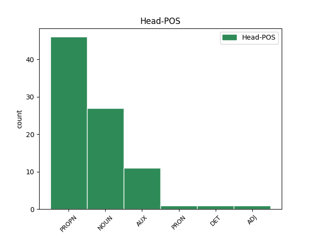

Distribution of features within this leaf

Agreement Rules sorted by frequency.
- When the dependent token is the appositional modifier(appos) of the head token, and the head token is NOUN and the dependent token is PROPN.
1 AGINTE _ _ _ _ 0 _ _ _
2 militar _ _ _ _ 0 _ _ _
3 britainiarra _ _ _ _ 0 _ _ _
4 eta _ _ _ _ 0 _ _ _
5 Nazio _ _ _ _ 0 _ _ _
6 Batuen _ _ _ _ 0 _ _ _
7 Sierra _ _ _ _ 0 _ _ _
8 Leonarako _ _ _ _ 0 _ _ _
9 Misioa misio NOUN _ Case=Abs|Definite=Def|Number=Sing 0 _ _ _
10 ( _ _ _ _ 0 _ _ _
11 UNAMSIL UNAMSIL PROPN _ Case=Abs|Definite=Def|Number=Sing 9 appos _ SpaceAfter=No
12 ) _ _ _ _ 0 _ _ _
13 West _ _ _ _ 0 _ _ _
14 Side _ _ _ _ 0 _ _ _
15 Boys _ _ _ _ 0 _ _ _
16 talde _ _ _ _ 0 _ _ _
17 erreboltariaren _ _ _ _ 0 _ _ _
18 esku _ _ _ _ 0 _ _ _
19 dauden _ _ _ _ 0 _ _ _
20 sei _ _ _ _ 0 _ _ _
21 soldadu _ _ _ _ 0 _ _ _
22 britainiarrak _ _ _ _ 0 _ _ _
23 askatzeko _ _ _ _ 0 _ _ _
24 ahaleginak _ _ _ _ 0 _ _ _
25 egiten _ _ _ _ 0 _ _ _
26 jarraitzen _ _ _ _ 0 _ _ _
27 dute _ _ _ _ 0 _ _ _
28 . _ _ _ _ 0 _ _ _
1 SASOIA _ _ _ _ 0 _ _ _
2 prestatzeko _ _ _ _ 0 _ _ _
3 bigarren _ _ _ _ 0 _ _ _
4 lagunarteko _ _ _ _ 0 _ _ _
5 norgehiagoka _ _ _ _ 0 _ _ _
6 jokatuko _ _ _ _ 0 _ _ _
7 du _ _ _ _ 0 _ _ _
8 Miarritzek _ _ _ _ 0 _ _ _
9 , _ _ _ _ 0 _ _ _
10 gaur _ _ _ _ 0 _ _ _
11 , _ _ _ _ 0 _ _ _
12 Auchen Auch PROPN _ Case=Ine|Definite=Def|Number=Sing 0 _ _ _
13 ( _ _ _ _ 0 _ _ _
14 Frantzia _ _ _ _ 0 _ _ _
15 ) _ _ _ _ 0 _ _ _
16 , _ _ _ _ 0 _ _ _
17 Vic-Fe-censacen Vic-Fe-censace PROPN _ Case=Ine|Definite=Def|Number=Sing 12 appos _ _
18 hain _ _ _ _ 0 _ _ _
19 zuzen _ _ _ _ 0 _ _ _
20 ere _ _ _ _ 0 _ _ _
21 ( _ _ _ _ 0 _ _ _
22 18:00 _ _ _ _ 0 _ _ _
23 ) _ _ _ _ 0 _ _ _
24 . _ _ _ _ 0 _ _ _
1 Lau _ _ _ _ 0 _ _ _
2 pilotarien _ _ _ _ 0 _ _ _
3 artean _ _ _ _ 0 _ _ _
4 gehien _ _ _ _ 0 _ _ _
5 nabarmendu _ _ _ _ 0 _ _ _
6 zena izan AUX _ Case=Abs|Definite=Def|Mood=Ind|Number=Sing|Number[abs]=Sing|Person[abs]=3 0 _ _ _
7 Tirapu Tirapu PROPN _ Animacy=Anim|Case=Abs|Definite=Def|Number=Sing 6 subj _ _
8 izan _ _ _ _ 0 _ _ _
9 zen _ _ _ _ 0 _ _ _
10 . _ _ _ _ 0 _ _ _
1 Rigaudeau Rigaudeau PROPN _ Case=Abs|Definite=Def|Number=Sing 2 comp:obj _ _
2 gidari gidari NOUN _ Animacy=Anim|Case=Abs|Definite=Ind 0 _ _ _
3 duela _ _ _ _ 0 _ _ _
4 , _ _ _ _ 0 _ _ _
5 Kinder _ _ _ _ 0 _ _ _
6 partidu _ _ _ _ 0 _ _ _
7 onak _ _ _ _ 0 _ _ _
8 eta _ _ _ _ 0 _ _ _
9 txarrak _ _ _ _ 0 _ _ _
10 tartekatzen _ _ _ _ 0 _ _ _
11 ari _ _ _ _ 0 _ _ _
12 da _ _ _ _ 0 _ _ _
13 . _ _ _ _ 0 _ _ _
1 Azkenik _ _ _ _ 0 _ _ _
2 , _ _ _ _ 0 _ _ _
3 Espainiako Espainia PROPN _ Case=Loc|Definite=Def|Number=Sing 0 _ _ _
4 Parlamentuan _ _ _ _ 0 _ _ _
5 EAJko EAJ PROPN _ Case=Loc|Definite=Def|Number=Sing 3 unk _ _
6 bozeramaile _ _ _ _ 0 _ _ _
7 Iñaki _ _ _ _ 0 _ _ _
8 Anasagastik _ _ _ _ 0 _ _ _
9 PPk _ _ _ _ 0 _ _ _
10 eta _ _ _ _ 0 _ _ _
11 PSOEk _ _ _ _ 0 _ _ _
12 elkarrizketarako _ _ _ _ 0 _ _ _
13 jarritako _ _ _ _ 0 _ _ _
14 baldintzak _ _ _ _ 0 _ _ _
15 salatu _ _ _ _ 0 _ _ _
16 zituen _ _ _ _ 0 _ _ _
17 . _ _ _ _ 0 _ _ _
1 Baliteke _ _ _ _ 0 _ _ _
2 Motten _ _ _ _ 0 _ _ _
3 ordezkoa _ _ _ _ 0 _ _ _
4 Anstey Anstey PROPN _ Case=Abs|Definite=Def|Number=Sing 5 comp:pred _ _
5 izatea izan AUX _ Case=Abs 0 _ _ _
6 . _ _ _ _ 0 _ _ _
1 Heldu _ _ _ _ 0 _ _ _
2 den _ _ _ _ 0 _ _ _
3 larunbatean _ _ _ _ 0 _ _ _
4 bigarren _ _ _ _ 0 _ _ _
5 ahalegina _ _ _ _ 0 _ _ _
6 egingo _ _ _ _ 0 _ _ _
7 du _ _ _ _ 0 _ _ _
8 harri _ _ _ _ 0 _ _ _
9 horrekin _ _ _ _ 0 _ _ _
10 , _ _ _ _ 0 _ _ _
11 Donostian _ _ _ _ 0 _ _ _
12 , _ _ _ _ 0 _ _ _
13 Euskadiko Euskadi PROPN _ Case=Loc|Definite=Def|Number=Sing 15 compound _ _
14 Sei _ _ _ _ 0 _ _ _
15 Orduetako ordu NOUN _ Case=Loc|Definite=Def|Number=Plur 0 _ _ _
16 ekitaldian _ _ _ _ 0 _ _ _
17 . _ _ _ _ 0 _ _ _
Disagree Examples:
1 Txapelketako _ _ _ _ 0 _ _ _
2 bi _ _ _ _ 0 _ _ _
3 finalerdiak _ _ _ _ 0 _ _ _
4 herenegun _ _ _ _ 0 _ _ _
5 jokatu _ _ _ _ 0 _ _ _
6 ziren _ _ _ _ 0 _ _ _
7 , _ _ _ _ 0 _ _ _
8 Lantzen Lantz PROPN _ Case=Ine|Definite=Def|Number=Sing 0 _ _ _
9 ( _ _ _ _ 0 _ _ _
10 Nafarroa Nafarroa PROPN _ Case=Abs|Definite=Def|Number=Sing 8 appos _ SpaceAfter=No
11 ) _ _ _ _ 0 _ _ _
12 . _ _ _ _ 0 _ _ _
1 1998an _ _ _ _ 0 _ _ _
2 eta _ _ _ _ 0 _ _ _
3 aurten _ _ _ _ 0 _ _ _
4 Munsterrek Munster PROPN _ Case=Erg|Definite=Def|Number=Sing 0 _ _ _
5 ( _ _ _ _ 0 _ _ _
6 Irlanda Irlanda PROPN _ Case=Abs|Definite=Def|Number=Sing 4 appos _ SpaceAfter=No
7 ) _ _ _ _ 0 _ _ _
8 kanporatu _ _ _ _ 0 _ _ _
9 du _ _ _ _ 0 _ _ _
10 finalerdietan _ _ _ _ 0 _ _ _
11 . _ _ _ _ 0 _ _ _
1 25. _ _ _ _ 0 _ _ _
2 GAILURRETAKO _ _ _ _ 0 _ _ _
3 lasterkaldia _ _ _ _ 0 _ _ _
4 jokatuko _ _ _ _ 0 _ _ _
5 da _ _ _ _ 0 _ _ _
6 gaur _ _ _ _ 0 _ _ _
7 Ezpeletan Ezpeleta PROPN _ Case=Ine|Definite=Def|Number=Sing 0 _ _ _
8 ( _ _ _ _ 0 _ _ _
9 Lapurdi Lapurdi PROPN _ Case=Abs|Definite=Def|Number=Sing 7 appos _ SpaceAfter=No
10 ) _ _ _ _ 0 _ _ _
11 . _ _ _ _ 0 _ _ _
1 HILAREN _ _ _ _ 0 _ _ _
2 7an _ _ _ _ 0 _ _ _
3 Narancoko _ _ _ _ 0 _ _ _
4 34. _ _ _ _ 0 _ _ _
5 Igoera _ _ _ _ 0 _ _ _
6 jokatuko _ _ _ _ 0 _ _ _
7 da _ _ _ _ 0 _ _ _
8 Oviedon Oviedo PROPN _ Case=Ine|Definite=Def|Number=Sing 0 _ _ _
9 ( _ _ _ _ 0 _ _ _
10 Espainia Espainia PROPN _ Case=Abs|Definite=Def|Number=Sing 8 appos _ SpaceAfter=No
11 ) _ _ _ _ 0 _ _ _
12 . _ _ _ _ 0 _ _ _
1 ( _ _ _ _ 0 _ _ _
2 Euskaraz _ _ _ _ 0 _ _ _
3 da _ _ _ _ 0 _ _ _
4 Laxalten _ _ _ _ 0 _ _ _
5 " _ _ _ _ 0 _ _ _
6 A _ _ _ _ 0 _ _ _
7 Cup _ _ _ _ 0 _ _ _
8 ot _ _ _ _ 0 _ _ _
9 Tea _ _ _ _ 0 _ _ _
10 in _ _ _ _ 0 _ _ _
11 Pamplona _ _ _ _ 0 _ _ _
12 " _ _ _ _ 0 _ _ _
13 , _ _ _ _ 0 _ _ _
14 edo _ _ _ _ 0 _ _ _
15 ' _ _ _ _ 0 _ _ _
16 Kafea _ _ _ _ 0 _ _ _
17 hartzea _ _ _ _ 0 _ _ _
18 Iruñean Iruñea PROPN _ Case=Ine|Definite=Def|Number=Sing 0 _ _ _
19 ' _ _ _ _ 0 _ _ _
20 ere _ _ _ _ 0 _ _ _
21 ( _ _ _ _ 0 _ _ _
22 Elkar Elkar PROPN _ Case=Abs|Definite=Def|Number=Sing 18 appos _ SpaceAfter=No
23 , _ _ _ _ 0 _ _ _
24 1986 _ _ _ _ 0 _ _ _
25 ) _ _ _ _ 0 _ _ _
26 , _ _ _ _ 0 _ _ _
27 itzultzaile _ _ _ _ 0 _ _ _
28 beraren _ _ _ _ 0 _ _ _
29 lumatik _ _ _ _ 0 _ _ _
30 ) _ _ _ _ 0 _ _ _
31 . _ _ _ _ 0 _ _ _